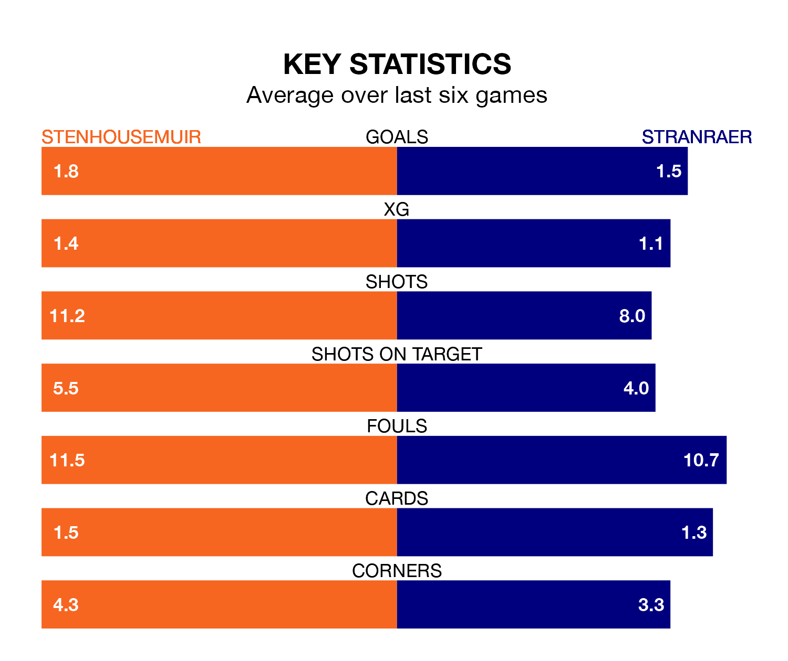

Stenhousemuir are heavy favourites to keep all three points at home in Saturday's kick-off against Stranraer.
The Warriors, who sit top of League Two with 20 games played, are priced at 1.3 to seal victory at Ochilview Park.
Sitting five places and 27 points behind them in the table, Stranraer are 7.9 to win with *Betting Company*, while the draw is at 4.7.
With 37 goals in 20 games so far this season, Stenhousemuir are the league's highest scorers with 1.9 goals per game. And they are conceding fewer than average, letting in 13 goals at a rate of 0.7 per game.
Stranraer, meanwhile, are below average scorers, with 1.3 goals per game, compared to a league average of 1.4. They have conceded 1.9 goals per game.
The Warriors are in exceptional form in League Two, with six wins and no losses from their last six games.
With two wins and two draws over that period, the visitors' form is much worse – they have taken eight points from 18, compared to the home team's 18.
In Matthew Aitken, Stenhousemuir have the league's most on-form striker so far this season. He has notched 13 goals in 20 appearances.
Stranraer's top scorers, with four goals each, are Thomas Orr and James Dolan.
In the last 10 years, Stenhousemuir and Stranraer have played each other on 30 occasions. Stenhousemuir won nine of them, Stranraer 15, and they drew six times.
On average, the Warriors scored 1.2 goals and Stranraer 1.9 in those matches.
Their last meeting was on November 18, when Stenhousemuir won 3-0 away.
Stenhousemuir's last match was on January 13, a 2-0 win against Spartans, with Aitken and Matt Yates getting the goals for the Warriors.
Stranraer beat Peterhead 2-0 last time out, also on January 13, with Chris Johnston and Orr on the scoresheet.
Updated: 14:53 (UTC), 16/01/24